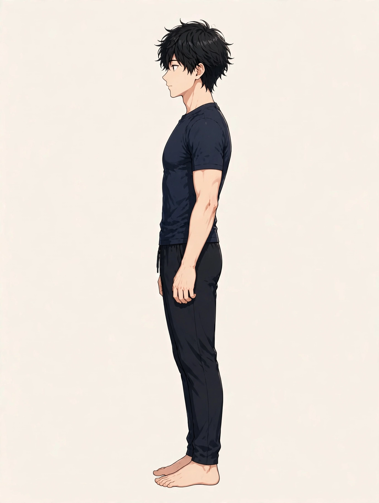

SYMPTOM GUIDE ｜ 東三国・新大阪
平背（ストレートバック）でお悩みの方へ東三国・新大阪の男性専用整体院 北辰堂

背中がまっすぐすぎて硬い、深呼吸をしても胸が広がらない感じがする、背中の張りが取れにくい——。横から見たときに、背中の本来のゆるやかなカーブが小さくなっている姿勢を「平背（ストレートバック）」と呼びます。
猫背とは逆のタイプの姿勢の問題で、背骨のクッション性が働きにくく、背中の筋肉の持続的な緊張や呼吸の浅さと結びつくことがあります。このページでは、平背の仕組みと要因、ツボ、セルフケア、受診の目安をまとめました。一般的な健康情報としてお読みください。
① 平背（ストレートバック）とは
背骨は横から見ると、頸椎の前弯・胸椎の後弯・腰椎の前弯という波形のカーブを描いています。胸椎の後弯（背中側へ膨らむカーブ）は、頭の重さや着地の衝撃を分散するクッションの役割を果たします。平背は、この胸椎のカーブが小さくなり、背中が板のようにまっすぐになった状態です。
カーブが失われると、衝撃の吸収がうまくいかず、背中の筋肉（脊柱起立筋など）が常に働いて体を支えることになります。その結果、背中の張りや疲労が抜けにくくなります。また、胸郭の動きも硬くなりやすく、肋骨の広がりが制限されて呼吸が浅くなる傾向があります。
平背は、姿勢を「良くしよう」と背筋を伸ばし続けるクセや、胸を張る姿勢の取りすぎ、腹筋と背筋の使い方の偏りなどで作られることがあります。見た目が「姿勢が良い」ように見えるため、問題として気づかれにくいタイプです。対応の中心は、胸椎に自然な丸みと動きを取り戻し、背中の筋肉を休ませられるようにすることです。
平背では胸椎の後弯が小さく、背中がまっすぐに近くなります。背部の筋肉が支え続けるため、張りが抜けにくくなります。位置は目安です。
② 要因の整理
平背の背景には、背中を固める体の使い方と、胸郭の動きの低下が関わっていることが多くあります。
- 背筋を伸ばし続けるクセ：「良い姿勢」を意識して背中を反らし・固め続けるクセは、胸椎の自然な丸みを消し、背部の筋肉を持続的に緊張させます。
- 胸を張る姿勢の取りすぎ：胸を張る・肩甲骨を寄せ続ける姿勢も、度が過ぎると胸椎の後弯を減らします。接客や営業など、姿勢を正し続ける仕事で見られます。
- 腹筋の使い方の偏り：腹筋のトレーニングで体幹前面ばかりを固めると、背骨の波形が平らになりやすいとされます。前後のバランスが関係します。
- デスクワークでの固まった背中：背もたれを使わず背中を固めて座る時間が長いと、胸椎の動きそのものが失われ、平らなまま固まります。
- 呼吸の浅さとの連動：胸郭が硬いと呼吸が浅くなり、浅い呼吸はさらに胸郭の動きを減らすという循環が起こります。
- スポーツ・武道の影響：型として背中をまっすぐに保つ動作が多い競技や武道では、その姿勢が日常にも残る場合があります。
③ セルフチェックリスト
平背の傾向と、背中・呼吸の状態を振り返るためのチェックです。
- 横から見ると背中が板のようにまっすぐだと言われる
- 背中の張り・疲労が抜けにくい
- 深呼吸をしても胸が広がる感じがしない
- 仰向けで寝ると背中が浮く・床に当たって痛い
- 背中を丸める動き（前屈で背中を丸くする）が苦手
- 猫背ではないのに肩や首が凝りやすい
- 姿勢を良くしようとすると背中が疲れる
- 長時間の立位で背中全体が重くなる
チェックは診断のためのものではありません。背中の痛みが強い、しびれを伴う、背骨の変形が疑われるといった場合は、セルフケアより先に⑧の受診の目安を確認してください。
④ 東洋医学から見た考え方とツボ
東洋医学では、背部の中心を督脈が、両脇を足の太陽膀胱経が巡るとされます。背中の硬さはこの背部の経路の滞りとして捉えられ、胸椎まわりを開いて巡りを整えることが大切と考えます。呼吸の浅さは、胸部の気の巡りとも結びつけて考えられます。
風門・身柱・心兪は、胸椎まわりの代表的なツボです。北辰堂では鍼灸施術は行いませんが、ツボの考え方は、背部の緊張を確認する施術の組み立てと、セルフケアの案内に活かしています。

風門は第2胸椎の高さ、身柱は第3胸椎の下、心兪は第5胸椎の高さで背骨の外側にあります。位置は目安です。
ツボ：風門（ふうもん）
位置：首を倒したときに最も出っ張る骨から数えて2番目の胸椎（第2胸椎）の高さで、背骨から指2本分ほど外側にあります。
押し方：指の腹でゆっくり圧を加えるか、蒸しタオルで温めます。背中の上部の緊張をゆるめる目的で使います。
ツボ：身柱（しんちゅう）
位置：第3胸椎と第4胸椎の間で、背骨の真ん中のライン上にあります。肩甲骨の上端を結んだ高さが目安です。
押し方：指の腹で軽く圧を加えます。背中の中心軸の緊張を感じる場所で、強く押さず、心地よい圧にとどめてください。
ツボ：心兪（しんゆ）
位置：第5胸椎の高さで、背骨から指2本分ほど外側にあります。肩甲骨の下半分の高さが目安です。
押し方：テニスボールを背中と壁の間に挟んで体重を預ける方法でも刺激できます。胸椎まわりの硬さを緩める目的で使います。
⑤ 整体・リラクゼーションでの施術の考え方
北辰堂の施術では、横から見た背骨のラインと、うつ伏せでの胸椎の動き（押したときのしなり）を確認します。そのうえで、固まった胸椎まわりの関節と背部の筋肉に、丸める・反らすといった小さな動きを取り戻す方向で施術を組み立てます。強く反らせるような操作は行いません。
あわせて、呼吸の状態も確認します。胸郭の広がりが小さい場合は、肋骨まわりの筋肉の緊張を緩め、深い呼吸ができる体の状態を整えることも施術の柱です。姿勢については、「固めて正す」のではなく、力を抜いても保てる姿勢を一緒に探します。
背骨の変形や神経の症状が疑われる場合は、整体の範囲を超えます。その際は医療機関での評価を案内します。当院の役割は、胸椎の動きと背部の緊張に対するケアの補助です。
⑥ セルフケア
セルフケアの狙いは、胸椎に丸める動きを取り戻し、背中の筋肉を休ませることです。痛みの出る動きは無理に行わないでください。

①四つ這いになる ②息を吐きながら背中を天井へ丸める ③息を吸いながら背中を軽く反らす、を5回繰り返します。胸椎の丸める動きを取り戻す練習です。
セルフケア1：キャット＆カウ（四つ這いの背中の体操）
四つ這いで、吐きながら背中を丸め、吸いながら軽く反らす動きを5回繰り返します。平背の方は丸める動きが小さくなりがちなので、背中の真ん中が天井へ持ち上がる感覚を大切にしてください。
セルフケア2：胸椎の丸めストレッチ（椅子）
椅子に座り、両手を膝に置いて背中を丸め、背部の筋肉を20秒伸ばします。2回繰り返します。固まった胸椎に「丸まる」方向の刺激を入れる練習です。
セルフケア3：深呼吸の練習
仰向けで膝を立て、両手を肋骨の側面に当てます。息を吸うときに手が横へ広がるのを感じながら、ゆっくり5回呼吸します。胸郭の動きを取り戻す土台になります。
セルフケア4：背もたれの使い方の見直し
デスクワークでは背中を固め続けず、背もたれに体重を預ける時間を意識的に作ります。背中の筋肉を「休ませる姿勢」を覚えることもケアの一つです。
⑦ 場面別の注意
- デスクワーク中：背筋を伸ばし続けるのではなく、背もたれを使い、1時間に一度は背中を丸める動きを入れます。モニターの高さが低すぎると丸まりすぎ、高すぎると反りすぎの原因になります。
- トレーニング時：腹筋の種目に偏らず、背中を丸める・反らす両方向の動きを取り入れます。ベンチプレスなど胸を張る種目のあとは、背中を丸めるストレッチで締めます。
- 就寝時：仰向けで背中が当たって痛む場合は、膝下にクッションを入れて腰・背中の緊張を逃がします。硬すぎる寝具も背部の緊張を助長する場合があります。
- 長時間の立位：立ち仕事では、時々壁に背中をつけて丸める動きを入れます。「良い姿勢」を固めて保ち続けないことが、疲労の蓄積を防ぎます。
⑧ 受診の目安
- 背中の痛みが強く、安静でも治まらない
- 腕や脚へのしびれ、力が入りにくい感じを伴う
- 背骨の変形や側弯が疑われる見た目である
- 思春期のころから背骨の形の指摘を受けている
- ケガのあとから背中の形と痛みが変わった
- 発熱や体重減少など、体の不調を伴う
背骨の形や痛みの評価は医療機関（整形外科）の領域です。平背そのものは体質的な場合も多いものの、痛みや神経症状を伴う場合は、早めに受診してください。
⑨ よくある質問
Q. 平背は猫背より良い姿勢なのですか？
見た目は「姿勢が良い」ように見えますが、カーブが失われた背中は衝撃を吸収しにくく、筋肉の持続的な緊張を招きます。猫背・平背のどちらが良いという話ではなく、背骨が自然な波形と動きを保てることが大切です。
Q. 背筋を伸ばす意識はやめたほうがよいですか？
伸ばすこと自体が悪いのではなく、固め続けることが問題です。力を抜いても崩れない範囲で背中を使う感覚を、セルフケアと施術で一緒に整えていきます。
Q. 呼吸が浅いのも関係ありますか？
胸郭の動きが硬いと肋骨が広がりにくく、呼吸が浅くなる傾向があります。背中のケアと呼吸の練習を組み合わせることで、両面からの改善を目指します。
Q. 仰向けで寝ると背中が痛いのは平背のせいですか？
平背の方は仰向けで背中の接地面が増え、圧迫感や痛みを感じることがあります。ただし原因は一つとは限らないため、痛みが続く場合は医療機関での確認をおすすめします。膝下クッションなどの工夫は、その場の負担軽減に使えます。
北辰堂のご案内
北辰堂は、大阪市淀川区東三国二丁目にある整体院です。男性スタッフ1人で運営しているため、男性専用としています。施術歴30年の平賀伸人（鍼灸師・国家資格）が、整体とリラクゼーションを行います。当院では鍼灸施術は行いません。営業は平日・土曜17:00〜22:00、日曜10:00〜22:00の完全予約制です。料金は60分 初回2,000円／2回目以降6,000円、90分 初回3,000円／2回目以降9,000円で、お支払いは現金のみです。プライバシーへの配慮のため、詳しい住所はご予約確定後にLINEでご案内します。
メニュー・料金は料金・メニューページ、施術者については当院についてをご覧ください。
関連するお悩み
ご予約・ご相談はLINEから
東三国・新大阪・淀川区周辺で、体のケアの相談先をお探しの方は、LINE公式アカウント（北辰堂）からお気軽にご連絡ください。現在の状態をお聞きしたうえで、施術の進め方をご案内します。
LINEで予約する